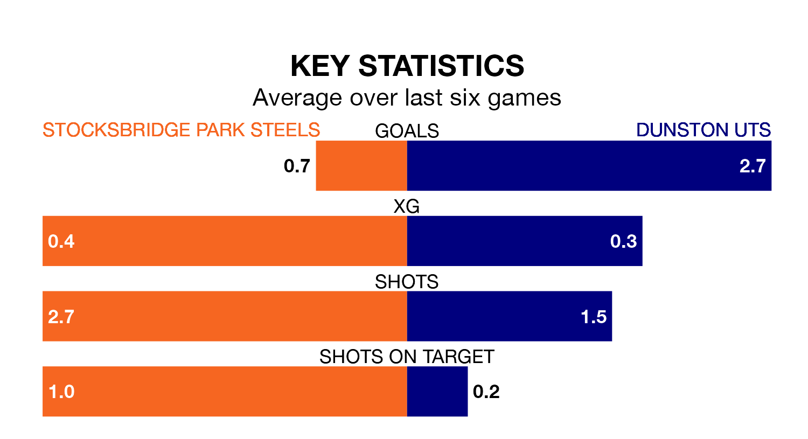

Dunston UTS travel to Bracken Moor for Saturday's match against Stocksbridge Park Steels looking to bounce back from defeat last time out in the Northern Premier League Division One East.
Dunston UTS, who sit second in the league after 34 games, fell to a 2-1 home defeat to Winterton Rangers on April 20.
They face a Stocksbridge side who secured a draw in their last match, a 0-0 tie with Cleethorpes Town, and who sit 15th in the table.
With 68 goals in 34 games so far this season, Dunston UTS are the league's second-highest scorers with 2.0 goals per game. And they are conceding fewer than average, letting in 34 goals at a rate of 1.0 per game.
Stocksbridge, meanwhile, are below average scorers, with 1.1 goals per game, compared to a league average of 1.5. They have conceded 1.2 goals per game.
The Steels are in disappointing form in the Northern Premier League Division One East, with one win and two draws from their last six games.
With three wins and three losses over that period, the visitors' form is better – they have taken nine points from 18, compared to the home side's five.
In the last five years, Stocksbridge and Dunston UTS have played each other on five occasions. Stocksbridge won two of them, Dunston UTS one, and they drew twice.
On average, the Steels scored 2.4 goals and Dunston UTS 2.0 in those matches.
Their last meeting was on March 5, when they played out a 0-0 draw.
Updated: 07:59 (UTC), 26/04/24